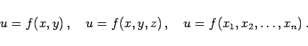
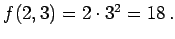
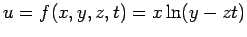
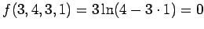

Inhalt Index DeskTop Bronstein

 Funktionen und ihre Darstellung Funktionen von mehreren Veränderlichen Definition und Darstellung
Funktionen und ihre Darstellung Funktionen von mehreren Veränderlichen Definition und Darstellung


Eine veränderliche Größe u wird eine Funktion von n unabhängigen Variablen  genannt, wenn u für gegebene Werte der unabhängigen Veränderlichen einen eindeutig bestimmten Wert annimmt. Je nachdem, ob es sich um eine Funktion von zwei, drei oder n veränderlichen Größen handelt, schreibt man
genannt, wenn u für gegebene Werte der unabhängigen Veränderlichen einen eindeutig bestimmten Wert annimmt. Je nachdem, ob es sich um eine Funktion von zwei, drei oder n veränderlichen Größen handelt, schreibt man
|  | (2.268) |
Setzt man für die n unabhängigen Variablen feste Zahlen ein, dann entsteht ein Wertesystem der Variablen, das als Punkt des n-dimensionalen Raumes (auch mehrdimensionaler Raum) interpretiert werden kann. Die einzelnen unabhängigen Variablen werden auch Argumente genannt; manchmal nennt man zusammenfassend das gesamte n-Tupel der unabhängigen Variablen das Argument der Funktion.
| Beispiel A |
|
u=f(x,y)=xy2 besitzt für das Wertesystem x=2,y=3 den Wert  |
| Beispiel B |
|
 nimmt für das Wertesystem x=3,y=4,z=3,t=1 den Wert  an. |